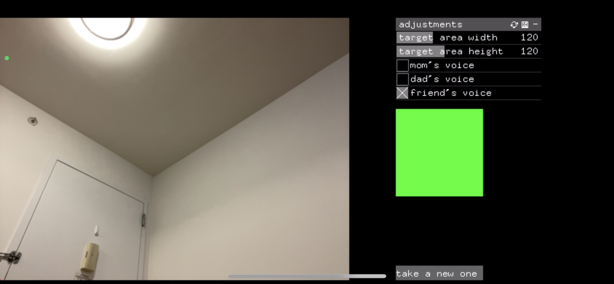
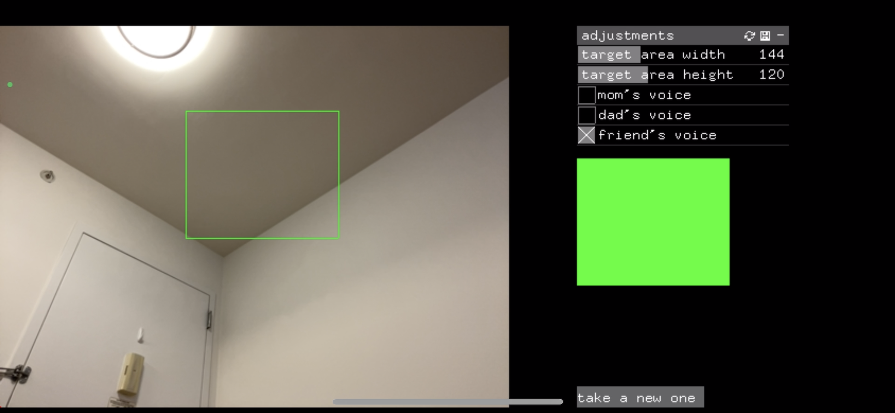
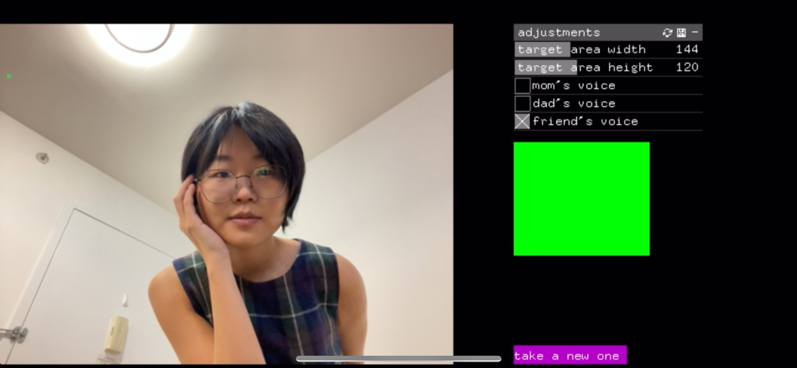
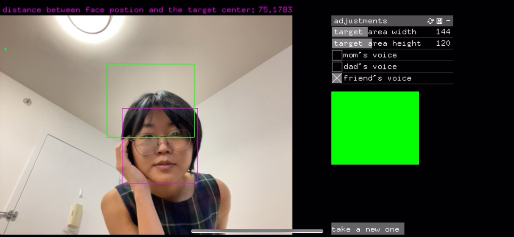

| Category | Duration | Tool / Material |
|---|---|---|
| ML/AI Application; Design; Development | 2022 @ New York University | C++; Objective C; openFrameworks; iPhone iOS 16; Xcode |
Open it when you miss traveling with friends and family and being photographed by them!
I used to dislike being photographed by family and friends, but I gradually realized that photos are the carrier
of memories, and memories make us who we are today. As I've grown older, I've also become more aware of the
importance of spending time with family and friends.
Now I am studying abroad. When I go out and encounter beautiful scenery, how I hope they can share this beauty
with me and become a part of my wonderful memory.
So I made this camera app for iOS 16 with a voice assistant, or a cure for missing. You can choose face target
position and choose the voice of any character from your family and friends as a guide.
This app would be especially needed when you are using your phone's back camera for a higher resolution than the
front camera.
Recording
Process
   